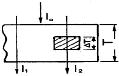
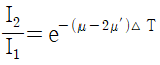
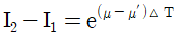
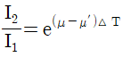
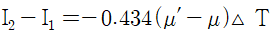
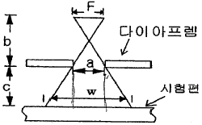

1과목: 비파괴검사 개론
1. x선투과시험과 비교한 γ선투과시험의 장점에 대한 설명으로 틀린 것은?
2. 자분 분상매가 가져야 할 특성에 대한 설명 중 옳은 것은?
3. 다음은 와전류탐상시험에서 표피효과의 기준이 되는 침투깊이에 대해 기술한 것이다. 올바른 것은?
4. 1cm 직경의 구리 봉을 2cm 직경의 코일로 검사하는 경우의 충전(진)율은?
5. 시험체에 있는 도체에 전류가 흐르도록 한 후, 시험체중의 전위분포를 계측하는 비파괴검사방법은?
6. 고강도 알루미늄 합금인 두랄루민의 주요 구성 원소는?
7. 2원계 상태도에서 포정 반응으로 옳은 것은?
8. 실루민은 어느 계통의 합금인가?
9. 은백색을 띠며 비중이 1.74로 실용금속 중 가장 가볍고 HCP 격자구조를 가지는 금속은?
10. Cu-Zn계 상태도에서 α상의 격자구조는?
11. 피로한도에 대한 설명으로 옳은 것은?
12. 탄소의 함량이 가장 낮은 것에서 높은 순서로 나열한 것은? (단, 오른쪽으로 갈수록 탄소의 함량이 높다.)
13. 비금속 개재물 검사 분류 항목 중 그룹 B에 해당하는 것은?
14. 다음 중 쾌삭강에서 쾌삭성을 향상시키는 원소와 가장 거리가 먼 것은?
15. 로크웰경도시험의 시험하중에 해당되지 않는 것은?
16. 다음 중 연납 땜과 경납 땜을 구분하는 온도는?
17. 피복 아크 용접시 발생되는 보호 가스의 성분 중 가장 많이 발생하는 가스는?
18. 아크 용접에서 용접일열 30000J/cm, 용접전압이 40V, 용접전류 125A일 때 용접속도는 몇 cm/min인가?
19. 탄소강의 피복 아크 용접에서 기공 발생의 원인이 아닌 것은?
20. 일반적인 플럭스 코어드 아크 용접의 특징으로 옳은 것은?
2과목: 방사선투과검사 원리
21. 방사선투과검사에서 가장 선명하고 실물에 가까운 영상을 얻기 위한 조건이 아닌 것은?
22. 방사선투과검사에서 연속 X선의 설명으로 틀린 것은?
23. Ra-226의 방사성 붕괴과정에서 4.79MeV의 에너지를 발생하는 붕괴로 옳은 것은?
24. 인공 방사성동위원소를 만드는 일반적인 방법이 아닌 것은?
25. 방사선투과검사는 방사선의 어떤 특성 차이를 이용하여 결함을 검출 하는가?
26. 중성자투과검사의 직접법에 이용하는 변환자로 구성된 것은?
27. X선과 γ선의 공통적인 특징에 대한 설명으로 틀린 것은?
28. 그림과 같이 일반 투과방사선량률을 I1, 결함부 투과방사선량률을 I2라 할 때 피사체 콘트라스트에 관한 관계식은? (단, T : 피사체 두께, △T : 결합부 두께, μ : 감쇠계수, μ‘ : 결함부의 감쇠계수, Io : 입사방사선량률이다.)





29. X선 투과사진의 피사체콘트라스트에 대한 설명으로 틀린 것은?
30. 일반적인 방사선투과사진에서 식별 가능한 최소 크기를 나타내는 척도는?
31. 1 Ci 강도의 Ra-226은 400년이 지난 후 약 몇 Ci의 강도로 되는가?: (단, 방사성동위원소 Ra-226의 반감기는 1600년이다.)
32. 수소의 경우 수소, 중수소, 삼중수소가 존재한다. 이것을 무엇이라 하는가?
33. 방사선방어에 사용되는 단위의 설명으로 틀린 것은? (단, C는 쿨롱, J는 줄(joule)이다.)
34. 방사성동위원소 Ir-192γ선원의 방출 에너지로만 나열된 것은?
35. X-선 회절법의 사용목적이 아닌 것은?
36. 방사선방어의 목적으로 등가선량을 결정하는데 사용하는 보정계수인 방사선 가중치가 가장 큰 것은?
37. 공기 단위 질량당 전리능력을 나타내고 방사선의 강도를 나타내는 것은?
38. 방사선투과검사에서 식별한계 콘트라스트에 관한 설명으로 옳은 것은?
39. X선 필름의 필름특성곡선에서 사진농도 2.10일 때 노출량이 4mA×52sec, 사진농도 1.90일 때 노출량 4mA×44sec이었다면 이 두 농도 사이의 평균 필름 콘트라스트는 약 얼마인가?
40. 빛의 투과율이 5%인 방사선투과사진의 농도는 얼마인가? (단, log2는 약 0.3이다.)
3과목: 방사선투과검사 시험
41. 고장력강의 용접부에 발생하기 쉬운 결함으로 수소에 의한 취화 때문에 생기는 결함은?
42. 방사선투과검사에서 X선 발생장치의 관전압을 높임에 따른 현상으로 틀린 것은?
43. 반감기가 각각 10일과 20일인 단순 붕괴하는 두 핵종의 처음 방사능이 같았다면 두 방사능의 비가 0.5가 되는 시간은 약 얼마인가?
44. 방사선투과검사에서 사용되는 현상제에 대한 설명으로 옳은 것은?
45. 방사선투과검사 시 엑스선 대신에 감마선을 이용하여 투과사진을 얻을 때의 특징으로 틀린 것은?
46. 방사선투과검사 필름 특성곡선에 대한 설명으로 틀린 것은?
47. 방사선투과검사애 사용되는 엑스선 발생장치의 출력량은?
48. 방사선 투과검사에서 시험체를 투과 후 필름에 도달하는 방사선량에 영향을 가장 많이 주는 것은?
49. 감마선원으로부터 방출되는 방사선의 총량과 가장 밀접한 관계가 있는 것은?
50. 방사성 동위원소 Ir-192를 사용하는 경우, 일반적으로 사용되는 전방 연박증감지(lead foil sereen)의 두께 범위로 옳은 것은?
51. 방사선투과검사에서 가하학적 불선명도를 감소시키기 위한 조건으로 맞는 것은?
52. 전자 방사선투과검사(Electron Radiography)를 적용하기 적당한 재료는?
53. 투과사진이 농도가 3.0인 것을 2.0인 것과 비교할 때 필름관찰기의 밝기가 일정할 경우 눈에 들어오는 투과광의 양은?
54. 산화납스크린에 필름을 넣고 밀봉한 형태로 제조된 일체형 필름의 특징이 아닌 것은?
55. 방사선투과검사에서 정착액의 주기능이 아닌 것은?
56. X선 발생장치에서 발생되는 특성 X선에 대한 설명 중 맞는 것은?
57. 방사선투과검사에 현상된 필름의 수세방법으로 틀린 것은?
58. 두꺼운 강용접부의 방사선투과검사에서 형광증감지를 사용하는 주된 목적은?
59. 방사선투과검사 사진상에 모재의 표면과 용접금속이 접하는 부분에서 발생된 용접결함으로 모재보다 사진농도가 높게 나타나는 것은?
60. 방사선투과검사 사진에서 강 용접 이음부의 결함에 대한 설명으로 틀린 것은?
4과목: 방사선투과검사 규격
61. 다음 중 확률적 영향에 해당되지 않는 것은?
62. 원자력안전법령에 규정된 방사선작업종사자에 대한 건강진단 항목 중 말초혈액에 대한 입상검사 항목이 아닌 것은?
63. 보일러 및 압력용기에 대한 방사선투과검사(ASME Sec, V Art. 2)에 따른 이동 방사선투과검사 시 이동방향에서 측정된 용접부 선원 쪽에서의 빔폭(W)은? (단, F : 3mm, a : 60mm, b : 120mm, C : 100mm)

64. 체내에 존재하는 방사성 핵종으로 인하여 그 사람이 일정기간 받게 되는 내부 피폭 방사선량은?
65. 알루미늄 용접부의 방사선투과검사 방법(KS D 0242)에서 증감지를 사용하지 않아도 되는 촬영 조건은?
66. 원자력안전법령에 따라 고정 설치된 방사선차폐시설이 없는 곳에서 방사선투과검사작업을 하는 경우에 일반인의 접근 여부를 감시해야 하는 구역은?
67. 동일한 방사능일 때 선원으로부터 1m 거리에서의 방사선량률이 가장 높은 방사성동위원소는?
68. 강 용접 이음부의 방사선 투과 시험 방법(SK B 0845)에 따른 내부 필름 촬영 방법에서 가로 균열의 검출이 특히 필요로 하는 경우에 시험부의 유효 길이는?
69. 강 용접 이음부의 방사선 투과 시험 방법(SK B 0845)에서 계조계 한 변의 길이에 대한 치수 허용차는?
70. 강 용접 이음부의 방사선 투과 시험 방법(SK B 0845)에 따라 T용접 이음부에 대한 방사선 투과사진을 촬영할 경우의 방사선 조사 방법으로 옳은 것은?
71. 보일러 및 압력용기에 대한 방사선투과검사(ASME Sec. V Art. 2)에서 선원의 크기가 3mm, 선원으로부터 필름까지의 거리가 500mm, 시험체의 선원측면으로부터 필름까지의 거리가 20mm인 경우 기하학적 불선명도는?
72. 강 용접 이음부의 방사선 투과 시험 방법(SK B 0845)에 규정된 투과사진에서 결함 분류 방법으로 옳은 것은?
73. 강 용접 이음부의 방사선 투과 시험 방법(SK B 0845)에 따라 강판의 맞대기 용접 이음부를 촬영할 때 계조계 사용 방법이 틀린 것은?
74. 원자력안전법령에 따라 고정 차폐된 사용시설이 이외에서의 방사선투과검사 작업 시 사용가능한 Ir-192의 최대 방사능은?
75. 강 용접 이음부의 방사선 투과 시험 방법(SK B 0845)에 따라 강판의 원둘레 용접 이음부를 촬영할 때 통상의 촬영 기술 적용이 곤란한 경우에 적용되는 상질로 옳은 것은?
76. 타이타늄 용접부의 방사선투과검사 방법(KS D 0239)에 따른 규정 중 틀린 것은?ㄱ
77. 보일러 및 압력용기에 대한 표준방사선투과검사(ASME Sec. V Art. 22 SE-94)에서 후방 산란방사선을 확인하기 위하여 사용되는 납글자 B의 두께는?
78. 보일러 및 압력용기에 대한 표준방사선투과검사(ASME Sec. V Art. 22 SE-94)에 규정된 수동 현상 시 필름을 수적방지제(wetting agent)에 담가 두어야 하는 시간은?
79. 방사선 차폐에 이용되는 재료 중 선흡수계수가 커서 차폐효율이 가장 좋은 것은?
80. 보일러 및 압력용기에 대한 표준방사선투과검사(ASME Sec. V Art. 22 SE-94)에 규정한 방사선원과 필름 사이에 배치되는 균일한 층상재료(uniform layers of material)는?